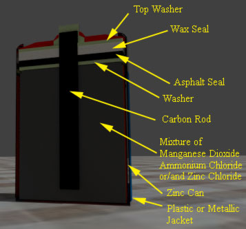

Construction of Leclanche' Battery
In commonly available cylindrical Leclanche’ cell available in the market has following constructional features.
- A cylindrical can made by thin sheet of zinc, serves as anode and it also holds all other active and electrolyte materials of the battery .
Ideally zinc used in battery should be 99.99% pure. Although the zinc used for making container of zinc carbon battery has 0.03 to 0.06% of cadmium, and 0.02 to 0.04% of lead. Lead gives the zinc better forming quality and it is also a corrosion inhibitor in addition, cadmium provides strong corrosion resistance to the zinc.
The zinc used in zinc carbon battery should be free from impurities like, cobalt, copper, nickel, iron because these materials involve in corrosive reaction with zinc in presence of electrolyte. In addition to that iron makes the zinc harder. Antimony, arsenic, magnesium type impurities make the zinc brittle.
- The cathode material is manganese dioxide. This is mixed with acetylene black and wet with ammonium chloride electrolyte, compressed in a hydraulic machine to give a solid bobbin shape.
The bobbin serves as positive electrode of the battery .Powdered manganese oxide (MnO2) and powdered carbon black are mixed with water, ammonium chloride (NH2Cl) or/and zinc chloride (ZnCl2). Here, MnO2 is active cathode material but highly electrical resistive, and carbon black powder increases the conductivity of the cathode. As the carbon dust is good moisture absorber it also holds the wet electrolyte inside the bobbin. The ratio of MnO2 and carbon can vary from 3:1 to 11:1 by weight depending upon the design of the battery . This ratio can also be 1:1 when the battery are manufactured for flash of cameras because here high pulses of current are more important than capacity.There are few types of manganese dioxide used in dry zinc carbon battery .
a) Natural Manganese Dioxide (NMD) is available in natural ore of the material. These ores contain 70 to 85% of manganese dioxide. It has alpha and beta phase crystal structure.
b) Chemically Synthesized Manganese Dioxide (CMD) contains 90 to 95% of pure manganese dioxide. It has delta phase crystal structure.
c) Electrolytic Manganese Dioxide (EMD). This is most expensive among other but performance wise best. It provides higher capacity of battery and used in heavy duty industrial applications. It has gamma phase crystal structure.
Previously graphite was used as conductive media of cathode bobbin but now carbon black is used as it has extra properties of holding wet electrolyte and it gives better compressibility and viscosity to the cathode mix. Cells containing carbon acetylene black in their cathode mix, perform better in inseminated services, whereas cells containing graphite in their cathode mix perform well in high and/or continuous current operation.- A carbon rod is inserted into this bobbin shaped cathode, as current collector from cathode. The top of this carbon rod also serves as positive terminal of the cell.
battery " width="357" height="333" class="size-full wp-image-14149" /> Cross Sectional View of Leclanche Cell
The carbon rod is normally made of compressed carbon. It is very highly conductive. Carbon by nature it is highly porous. By wax and oil treatment the carbon is made less porous up to a certain extent when it can prevent wet electrolyte to pass through but it can pass gases through it. This is so done, that hydrogen and carbon dioxide gases which might be formed during heavy discharge of battery can escape through this carbon rod. The said gases only get this porous path to go through as the upper portion of the bobbin is sealed by asphalt. That means a carbon rod in zinc – carbon battery also serves as venting passage for the gasses formed during heavy discharge.- The anode and cathode are separated by a thin layer of cereal paste wet with ammonium chloride and/or zinc chloride electrolyte or a starch or polymer coated absorbent Kraft paper. Thin separator decreases the internal resistance of the cell.
A commonly used Leclanche’ cell has an electrolyte which is wet mixture ammonium chloride and lesser quantity of zinc chloride. But on the other hand a zinc chloride cell used only wet zinc chloride as electrolyte. Although small quantity of ammonium chloride may also be added to zinc chloride, to ensure the high performance of zinc chloride battery .- On top of the cathode bobbin there is a supporting washer (nonconductive) placed.
- Asphalt seal is provided above that washer and then above the asphalt seal there is wax seal.
Sealing arrangements are there in the battery to prevent evaporation of electrolyte and water during its service and storage life.- After this sealing arrangement there is again a washer placed to hold the sealing material in place.
- This top washer also holds the one piece metal cover, fitted on top of the carbon rod.
- Now the assembly is covered by metallic, paper or plastic jacket to give aesthetic look. The labels and ratings are written on the outer cover the cell.
- The bottom of the cell some time is covered by a steel cover which provides extra protection.
- A carbon rod is inserted into this bobbin shaped cathode, as current collector from cathode. The top of this carbon rod also serves as positive terminal of the cell.
 by
by